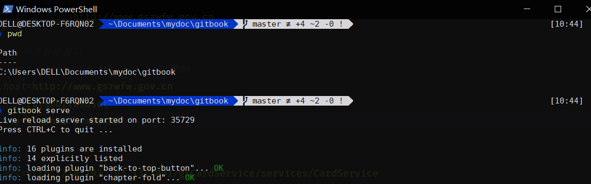
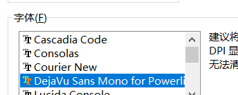

PowerShell
美化 PowerShell
美化效果:

配置windows允许执行没有签名（远程）的Powershell脚本
在设置中面板中搜索PowerShell 找到开发人员设置,打勾这一项
下载Windows包管理工具
Set-ExecutionPolicy Bypass -Scope Process -Force; iex ((New-Object System.Net.WebClient).DownloadString('https://chocolatey.org/install.ps1'))
输入 choco -v验证是否安装成功
GIT
choco install git
字体库
只需要安装字体库中 DejaVuSansMono 的字体就可以了. 字体下载好右键安装即可.
powershell的git集成方案 posh-git
Install-Module posh-git
基于posh-git的美化主题oh-my-posh
Install-Module oh-my-posh
硬货在这里
刚刚前面做的全都是事前准备而已，这里才是真正影响Powershell主题的主要关键。直接复制到Powershell跑一下吧。
Install-Module -Name PSReadLine -Force -SkipPublisherCheck
if (!(Test-Path -Path $PROFILE )) { New-Item -Type File -Path $PROFILE -Force }
@"
#requires -Version 2 -Modules posh-git
function Write-Theme {
param(
[bool]
`$lastCommandFailed,
[string]
`$with
)
`$lastColor = `$sl.Colors.PromptBackgroundColor
`$prompt = Write-Prompt -Object `$sl.PromptSymbols.StartSymbol -ForegroundColor `$sl.Colors.PromptForegroundColor -BackgroundColor `$sl.Colors.SessionInfoBackgroundColor
#check the last command state and indicate if failed
If (`$lastCommandFailed) {
`$prompt += Write-Prompt -Object "`$(`$sl.PromptSymbols.FailedCommandSymbol) " -ForegroundColor `$sl.Colors.CommandFailedIconForegroundColor -BackgroundColor `$sl.Colors.SessionInfoBackgroundColor
}
#check for elevated prompt
If (Test-Administrator) {
`$prompt += Write-Prompt -Object "`$(`$sl.PromptSymbols.ElevatedSymbol) " -ForegroundColor `$sl.Colors.AdminIconForegroundColor -BackgroundColor `$sl.Colors.SessionInfoBackgroundColor
}
`$user = [System.Environment]::UserName
`$computer = [System.Environment]::MachineName
`$path = Get-FullPath -dir `$pwd
if (Test-NotDefaultUser(`$user)) {
`$prompt += Write-Prompt -Object "`$user@`$computer " -ForegroundColor `$sl.Colors.SessionInfoForegroundColor -BackgroundColor `$sl.Colors.SessionInfoBackgroundColor
}
if (Test-VirtualEnv) {
`$prompt += Write-Prompt -Object "`$(`$sl.PromptSymbols.SegmentForwardSymbol) " -ForegroundColor `$sl.Colors.SessionInfoBackgroundColor -BackgroundColor `$sl.Colors.VirtualEnvBackgroundColor
`$prompt += Write-Prompt -Object "`$(`$sl.PromptSymbols.VirtualEnvSymbol) `$(Get-VirtualEnvName) " -ForegroundColor `$sl.Colors.VirtualEnvForegroundColor -BackgroundColor `$sl.Colors.VirtualEnvBackgroundColor
`$prompt += Write-Prompt -Object "`$(`$sl.PromptSymbols.SegmentForwardSymbol) " -ForegroundColor `$sl.Colors.VirtualEnvBackgroundColor -BackgroundColor `$sl.Colors.PromptBackgroundColor
}
else {
`$prompt += Write-Prompt -Object "`$(`$sl.PromptSymbols.SegmentForwardSymbol) " -ForegroundColor `$sl.Colors.SessionInfoBackgroundColor -BackgroundColor `$sl.Colors.PromptBackgroundColor
}
# Writes the drive portion
`$prompt += Write-Prompt -Object "`$path " -ForegroundColor `$sl.Colors.PromptForegroundColor -BackgroundColor `$sl.Colors.PromptBackgroundColor
`$status = Get-VCSStatus
if (`$status) {
`$themeInfo = Get-VcsInfo -status (`$status)
`$lastColor = `$themeInfo.BackgroundColor
`$prompt += Write-Prompt -Object `$(`$sl.PromptSymbols.SegmentForwardSymbol) -ForegroundColor `$sl.Colors.PromptBackgroundColor -BackgroundColor `$lastColor
`$prompt += Write-Prompt -Object " `$(`$themeInfo.VcInfo) " -BackgroundColor `$lastColor -ForegroundColor `$sl.Colors.GitForegroundColor
}
# Writes the postfix to the prompt
`$prompt += Write-Prompt -Object `$sl.PromptSymbols.SegmentForwardSymbol -ForegroundColor `$lastColor
`$timeStamp = Get-Date -UFormat %r
`$timestamp = "[`$timeStamp]"
`$prompt += Set-CursorForRightBlockWrite -textLength (`$timestamp.Length + 1)
`$prompt += Write-Prompt `$timeStamp -ForegroundColor `$sl.Colors.PromptForegroundColor
`$prompt += Set-Newline
if (`$with) {
`$prompt += Write-Prompt -Object "`$(`$with.ToUpper()) " -BackgroundColor `$sl.Colors.WithBackgroundColor -ForegroundColor `$sl.Colors.WithForegroundColor
}
`$prompt += Write-Prompt -Object (`$sl.PromptSymbols.PromptIndicator) -ForegroundColor `$sl.Colors.PromptBackgroundColor
`$prompt += ' '
`$prompt
}
`$sl = `$global:ThemeSettings #local settings
`$sl.PromptSymbols.StartSymbol = ''
`$sl.PromptSymbols.PromptIndicator = [char]::ConvertFromUtf32(0x276F)
`$sl.PromptSymbols.SegmentForwardSymbol = [char]::ConvertFromUtf32(0xE0B0)
`$sl.Colors.PromptForegroundColor = [ConsoleColor]::White
`$sl.Colors.PromptSymbolColor = [ConsoleColor]::White
`$sl.Colors.PromptHighlightColor = [ConsoleColor]::DarkBlue
`$sl.Colors.GitForegroundColor = [ConsoleColor]::Black
`$sl.Colors.WithForegroundColor = [ConsoleColor]::DarkRed
`$sl.Colors.WithBackgroundColor = [ConsoleColor]::Magenta
`$sl.Colors.VirtualEnvBackgroundColor = [System.ConsoleColor]::Red
`$sl.Colors.VirtualEnvForegroundColor = [System.ConsoleColor]::White
"@>$env:userprofile"\Documents\WindowsPowerShell\Modules\oh-my-posh\2.0.230\Themes\Paradox.psm1"
@"
chcp 65001
Set-PSReadlineOption -EditMode Emacs
function which(`$name) { Get-Command `$name | Select-Object Definition }
function rmrf(`$item) { Remove-Item `$item -Recurse -Force }
function mkfile(`$file) { "" | Out-File `$file -Encoding ASCII }
Import-Module posh-git
Import-Module oh-my-posh
Set-Theme Paradox
"@ > $PROFILE
chcp 65001
Set-PSReadlineOption -EditMode Emacs
Import-Module posh-git
Import-Module oh-my-posh
Set-Theme Paradox
设置powershell字体,选择安装的powerline字体.

其他主题参考 主题页面